Erosion modelling
Predicting surface deformation caused by solid particles in flow, from the PhD thesis at Strathclyde through to current work on hydraulic machinery.
Universidad de Deusto · Bilbao
Assistant Professor in Mechanical Engineering. I develop, apply and validate numerical methods for multiphase flows and their interaction with solid surfaces, with a focus on erosion, CFD and DEM.

My work sits where fluid mechanics, particle technology and computational modelling meet.
Predicting surface deformation caused by solid particles in flow, from the PhD thesis at Strathclyde through to current work on hydraulic machinery.
Coupled fluid–particle simulation with CFD and DEM to understand how particles move, collide and wear surfaces.
Simulation of particulate systems with industrial partners, including projects with the pharmaceutical and consumer goods sectors during my time at Leeds.
Loaded automatically from my ORCID record, so this list is always current.
I studied Electro-Mechanical and Industrial Engineering at the University of the Basque Country and worked for two years in the service industry before deciding to pursue research. I completed a PhD in Mechanical and Aerospace Engineering at the University of Strathclyde (Glasgow), modelling surface deformation in erosion processes with CFD.
After a postdoctoral position at the University of Leeds in the group of Prof. Mojtaba Ghadiri, I joined Deusto in 2018, where I teach and lead research. I am also Degree Programme Coordinator for the Industrial, Mechanical and Electro-Mechanical Engineering degrees, and a visiting researcher at Leeds.
In 2023 I received a JSPS Postdoctoral Fellowship for research in Japan, along with grants from the Basque Government and the Spanish Supercomputing Network (RES).
I am looking for motivated collaborators and prospective students (PhD, postdoctoral and Master's) in multiphase flows and computational mechanics.
I strongly encourage applications to competitive fellowships such as Juan de la Cierva and Marie Skłodowska-Curie Actions (MSCA), as well as PhD programmes and grants. If this fits your interests, send me your CV and a short note about your research ideas.
Universidad de Deusto, Faculty of Engineering, Bilbao, Spain.